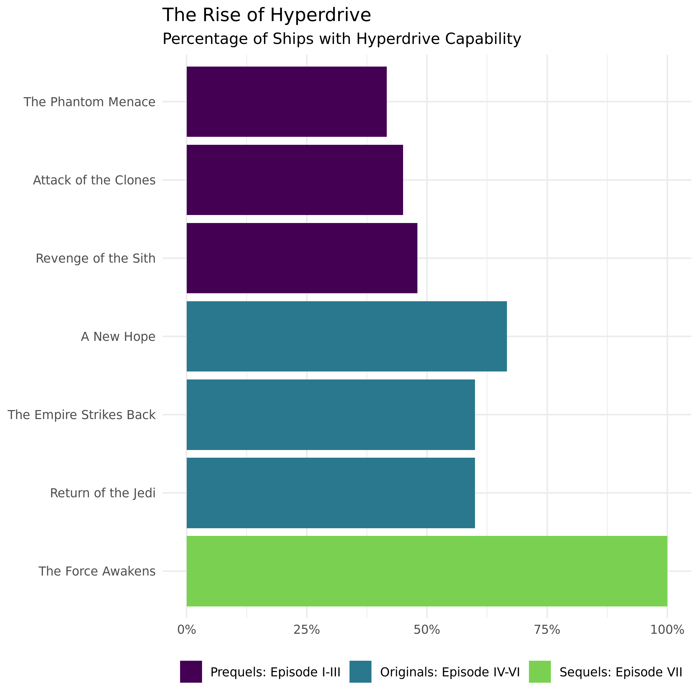
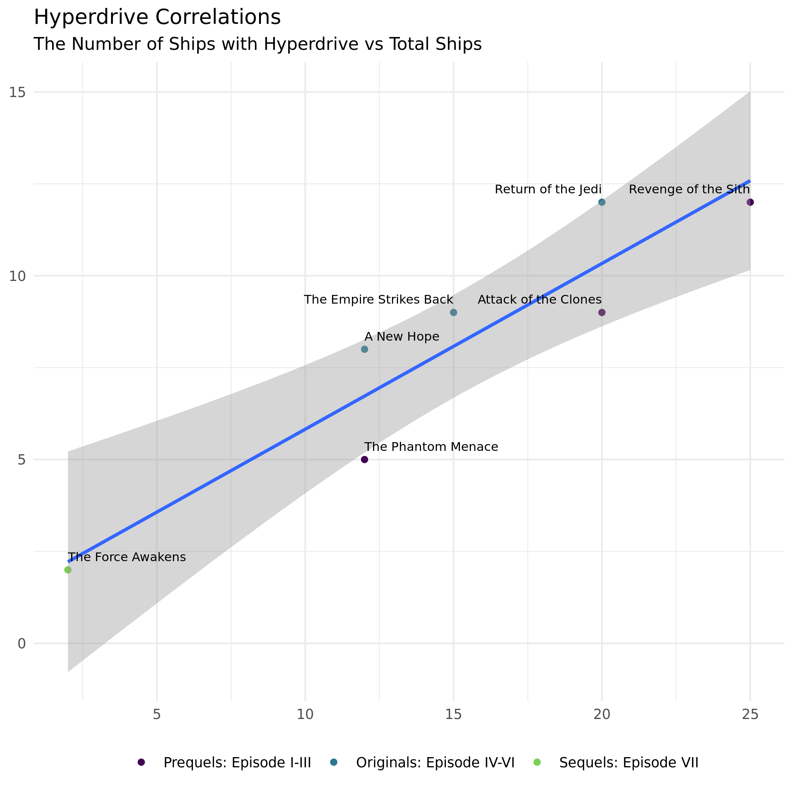
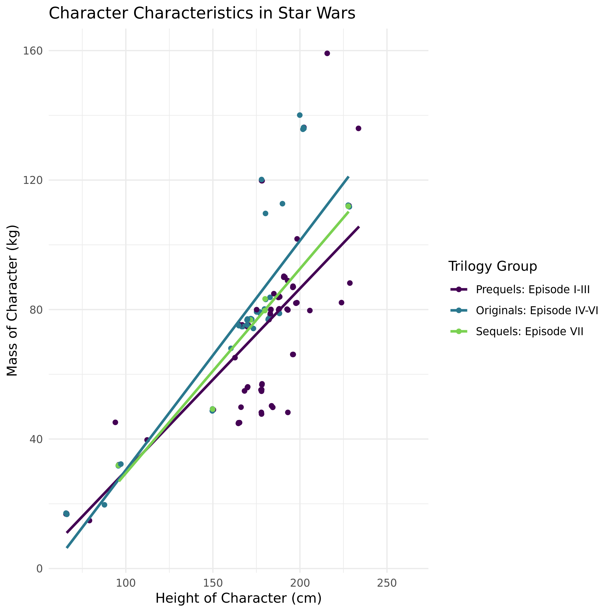

View(sw_films) PA 12: Exploring the Star Wars Universe
This task is complex. It requires many different types of abilities. Everyone will be good at some of these abilities but nobody will be good at all of them. In order to solve this puzzle, you will need to use the skills of each member of your group.
Groupwork Protocols
During the Practice Activity, you and your partner will alternate between two roles—Computer and Coder.
When you are the Computer, you will type into the Quarto document in RStudio. However, you do not type your own ideas. Instead, you type what the Coder tells you to type. You are permitted to ask the Coder clarifying questions, and, if both of you have a question, you are permitted to ask the professor. You are expected to run the code provided by the Coder and, if necessary, to work with the Coder to debug the code. Once the code runs, you are expected to collaborate with the Coder to write code comments that describe the actions taken by your code.
When you are the Coder, you are responsible for reading the instructions / prompts and directing the Computer what to type in the Quarto document. You are responsible for managing the resources your group has available to you (e.g., cheatsheet, textbook). If necessary, you should work with the Computer to debug the code you specified. Once the code runs, you are expected to collaborate with the Computer to write code comments that describe the actions taken by your code.
Here are more details of the Pair Programming Protocols
Note
The person who who is going the farthest from CSUMB this summer starts as the Computer (typing and listening to instructions from the Coder)!
Group Norms
Remember, your group is expected to adhere to the following norms:
- Be curious. Don’t correct.
- Be open minded.
- Ask questions rather than contribute.
- Respect each other.
- Allow each teammate to contribute to the activity through their role.
- Do not divide the work.
- No cross talk with other groups.
- Communicate with each other!
Goals for the Activity
- Apply methods of to use lists and iteration (using
purrr) to extract data from various non-tabular data sets.
- Create new data sets through the cleaning, organization, and joining of data from various sources
- Create visualizations to explore the data
- May the force be with you!
THROUGHOUT THE Activity be sure to follow the Style Guide by doing the following:
- load the appropriate packages at the beginning of the Quarto document
- use proper spacing
- add labels to all code chunks
- comment at least once in each code chunk to describe why you made your coding decisions
- add appropriate labels to all graphic axes
Setting up your Project
Your project should have the following components:
- completed pa-12-star-wars-activity.qmd
- rendered file as
.html
Important
The original Computer should submit the zip file for the canvas quiz. The original Coder can just submit the rendered html file.
Computer - Be sure to share the final .qmd, .png, and .html file with the original Coder.
Review: Extracting Information from Different Data Sets
Here is information about the fist 7 Star Wars films:
We are going to explore the data contained in several lists similar to this one (and the previously explored sw_people), combining skills from all of our previous R code learning experiences.
How do the following two codes compare?
sw_films[[4]][["title"]]
sw_films |> pluck(4,"title")Suppose we want to pull out just the titles as a character vector, select the correct code (comment out the rest) to perform this action. You may want to run each line of code one at a time (remember Ctrl + Enter for Windows with your cursor on that line of code).
#comment out the incorrect codes
map_chr(sw_films, "title")
sw_films |> map("title")
sw_films |> map_chr("title")
sw_films |> map_dfc("title")Suppose we want to apply a function to count the number of specific kinds of ships and vehicles in our data
Notice that for each film, the “starships” vector contains links to information on those starships (though note this data is out of date and should be linked at swapi.dev, not swapi.co).
sw_films[[1]][["starships"]]So if we can count the number of webpage links that would tell us the number of starships that appear in that movie. Here are three different ways to count the number of urls under starships. Can you think of another? (it is ok if you can’t). Compare and contrast how the three codes work differently to do the same thing.
sw_films |> map("starships") |> map_dbl(~length(.x))
map_dbl(sw_films, ~length(.x$starships))
map_dbl(sw_films, \(x) length(pluck(x, "starships")))
sw_films |> map_dbl(~length(.x$starships))Part 1: Evaluating Hyperdrive in the Star Wars Episodes
We will use the third method from the previous section to extract out the information we want from sw_films. For each row, specify if we should use a regular map(), map_dbl(), or map_chr().
NOTE Sometimes code like this gets a little finicky in R if you try to run it with Ctrl + Enter. Instead, use the code chunk green arrow to run the whole code chunk or highlight all of the code and then use the shortcut to run it.
sw_ships_1 <- tibble(
title = map____(sw_films, "title"), #character
episode = map____(sw_films, "episode_id"), #numeric
starships = map____(sw_films, ~length(.x$starships)), #numeric
vehicles = map____(sw_films, ~length(.x$vehicles)), #numeric
planets = map____(sw_films, ~length(.x$planets)) #numeric
)
sw_ships_1# A tibble: 7 × 5
title episode starships vehicles planets
<chr> <int> <dbl> <int> <int>
1 A New Hope 4 8 4 3
2 Attack of the Clones 2 9 11 5
3 The Phantom Menace 1 5 7 3
4 Revenge of the Sith 3 12 13 13
5 Return of the Jedi 6 12 8 5
6 The Empire Strikes Back 5 9 6 4
7 The Force Awakens 7 2 0 1Let’s do a bit more data cleaning to 1) assign the Trilogy classification to each episode, 2) calculate the total number of starships (which have hyperdrive) and vehicles (which do not have hyperdrive), and 3) calculate the proportion of total ships that have hyperdrive. Fill in the missing codes.
sw_ships <- sw_ships_1 ____
#create a new variable called trilogy
____(trilogy = case_when(episode %in% 1:3 ~ trilogies[1],
episode %in% 4:6 ~ trilogies[2],
episode %in% 7 ~ trilogies[3])) |>
#create a new variable called total_ships which adds vehicles and starships together
____(total_ships = vehicles + starships) |>
#create a new variable called prop that calculate the percent hyperdrive
____(percent = starships / total_ships * 100) Hyperdrive Use Across Films
Now, let’s make a plot examining how often hyperdrive ships appear in each episode. You will modify the code below to replicate the following visualization:

Fill in the blanks withe appropriate functions.
sw_ships |>
#be sure to order titles by order/episode
ggplot(aes(y = ____(title, desc(episode)),
x = percent)) +
#we want bars but our data is already summarized!
geom_____(aes(fill = trilogy)) +
labs(
title = "The Rise of Hyperdrive",
subtitle = "Percentage of Ships with Hyperdrive Capability"
) +
#you may need to install `scales` package if you haven't already
scale_x_continuous(labels = scales::label_percent(scale = 1)) +
theme_minimal() +
#what aesthetic do we modify to change the bar color
scale______viridis_d(end = 0.8) +
theme(axis.title.x = element_blank(),
axis.title.y = element_blank(),
legend.position = "bottom",
legend.title = element_blank())Canvas Quiz Question 1
Which movie has the second highest percentage of Hyperdrive ships?
Hyperdrive Prevalence within the Universe
We can also look at a plot to see if there is a correlation between the total number of ships and the number with hyperdrive (starships).

Fill in the blanks withe appropriate functions.
ggplot(aes(x = total_ships,
y = starships)) +
#make points
geom_______(aes(color = trilogy)) +
#fit a model
geom_______(method = "lm") +
#what does geom_text() do?
geom_text(aes(label = title),
vjust = -1,
hjust = "inward",
size = 2.75) +
labs(title = "Hyperdrive Correlations",
subtitle = "The Number of Ships with Hyperdrive vs Total Ships") +
theme_minimal() +
#what aesthetic do we want to modify the color of points?
scale________viridis_d(end = 0.8) +
theme(axis.title.x = element_blank(),
axis.title.y = element_blank(),
legend.position = "bottom",
legend.title = element_blank()) Canvas Quiz Question 2
What do you notice about the use of hyperdrive type vehicles in the episodes?
Part 2: The Physical Features of Star Wars Characters
Recall the data for “people” in Star Wars:
View(sw_people)We want to extract out name, height, and mass as character vectors (for now, we have to deal with some issues in height and weight later to change them into double type vectors) and keep films as a list for now. Fill in the correct map type functions for each one.
sw_peeps <- tibble(
name = ____(sw_people, "name"), #character
height = ____(sw_people, "height"), #character
mass = ____(sw_people, "mass"), #character
films = map____(sw_people, "films") #list
)
sw_peeps# A tibble: 87 × 4
name height mass films
<chr> <chr> <chr> <list>
1 Luke Skywalker 172 77 <chr [5]>
2 C-3PO 167 75 <chr [6]>
3 R2-D2 96 32 <chr [7]>
4 Darth Vader 202 136 <chr [4]>
5 Leia Organa 150 49 <chr [5]>
6 Owen Lars 178 120 <chr [3]>
7 Beru Whitesun lars 165 75 <chr [3]>
8 R5-D4 97 32 <chr [1]>
9 Biggs Darklighter 183 84 <chr [1]>
10 Obi-Wan Kenobi 182 77 <chr [6]>
# ℹ 77 more rowsNotice that the films column contains lists of urls for each film reference. Let’s pull out that same information from the sw_films data to have the title of the episode and the url as a character vector, and the episode number as a numeric value. Fill in the correct map type functions.
film_names <- tibble(
episode_id = ____(sw_films, "episode_id"), #double
episode_name = ____(sw_films, "title"), #character
url = ____(sw_films, "url") #character
)
film_names# A tibble: 7 × 3
episode_id episode_name url
<dbl> <chr> <chr>
1 4 A New Hope http://swapi.co/api/films/1/
2 2 Attack of the Clones http://swapi.co/api/films/5/
3 1 The Phantom Menace http://swapi.co/api/films/4/
4 3 Revenge of the Sith http://swapi.co/api/films/6/
5 6 Return of the Jedi http://swapi.co/api/films/3/
6 5 The Empire Strikes Back http://swapi.co/api/films/2/
7 7 The Force Awakens http://swapi.co/api/films/7/Now we can finish cleaning up our data by doing the following:
- turn
heightandmassinto numeric vectors;
- match the
films/urlsto theirepisode_namesand assign that back tosw_peeps.
sw_peeps2 <- sw_peeps |>
#use a function from readr to extract the numbers and replace "unknown" with na
mutate(height = parse_____(height, na = "unknown"),
mass = parse_____(mass, na = "unknown")) |>
#unnest the lists in films
____(cols = c("films")) |>
#join the film data with episodes names to the people data
_____join(film_names, by = c("films" = "url")) |>
#remove the `films` url from the data frame
____(-films) |>
#add the variable trilogy
____(trilogy = case_when(episode_id %in% 1:3 ~ trilogies[1],
episode_id %in% 4:6 ~ trilogies[2],
episode_id %in% 7 ~ trilogies[3]))
sw_peeps2# A tibble: 173 × 6
name height mass episode_id episode_name trilogy
<chr> <dbl> <dbl> <dbl> <chr> <fct>
1 Luke Skywalker 172 77 3 Revenge of the Sith Prequels: Epi…
2 Luke Skywalker 172 77 6 Return of the Jedi Originals: Ep…
3 Luke Skywalker 172 77 5 The Empire Strikes Back Originals: Ep…
4 Luke Skywalker 172 77 4 A New Hope Originals: Ep…
5 Luke Skywalker 172 77 7 The Force Awakens Sequels: Epis…
6 C-3PO 167 75 2 Attack of the Clones Prequels: Epi…
7 C-3PO 167 75 1 The Phantom Menace Prequels: Epi…
8 C-3PO 167 75 3 Revenge of the Sith Prequels: Epi…
9 C-3PO 167 75 6 Return of the Jedi Originals: Ep…
10 C-3PO 167 75 5 The Empire Strikes Back Originals: Ep…
# ℹ 163 more rowsSize of Characters in the Star Wars Universe
We can now create a plot of height and mass by trilogy group to see if the physique of characters differed across Trilogies (keeping in mind the third set of Trilogies is incomplete in this data set).

# be sure to also hide any warnings or messages within this code chunk
sw_peeps2 |>
filter(name != "Jabba Desilijic Tiure") |> #major outlier removed
#map the correct aesthetics
ggplot(aes(x = ____,
y = ____,
color = ____)) +
geom_point(position = "jitter") +
geom_smooth(method = "lm", se = FALSE) +
labs(x = "Height of Character (cm)",
y = "Mass of Character (kg)",
color = "Trilogy Group",
title = "Character Characteristics in Star Wars") +
theme_minimal() +
scale_color_viridis_d(end = 0.8) Canvas Quiz Question 3
Write some code to identify who is is the heaviest (look at the graph to help guide this) Star Wars character (excluding Jabba Desilijic Tiure).
OPTIONAL CHALLENGE PROBLEM
Your professor wants to use purrr to try and generate a height and mass scatterplot for each episode, but I don’t want to type out all that code. Here is where I got so far, but I am not convince this is the most sophisticated or effective way to do this. Do some research and see if you can find a way to put this process into production!
plots_sw <- sw_peeps2 |>
nest(data = !episode_name) |>
mutate(plot = map(data, ~ggplot(.x, aes(y=mass, x=height)) +
geom_point() +
geom_smooth(method = "lm", se = FALSE) +
labs(title = paste0(episode_name))))print(plots_sw$plot)sw_peeps2 |>
nest(data = !episode_name) |>
mutate(plot = map2(data, episode_name, \(d, ep)
ggplot(d, aes(y = mass, x = height)) +
geom_point() +
geom_smooth(method = "lm", se = FALSE) +
labs(title = ep)
))